Les P'tits Fruits
Oncle Pomme
"Laisser moi voir si ma peau est correctement vernissée …C’est bon allons-y mes amis ! Ma feuille n’est pas trop décoiffée…C’est bon…Très bien, c’est smart, on peut y aller ! C’est mon bon profil là ? Vous êtes surs ? Non parce que mon pédoncule est orienté à l’Ouest, et je ne voudrais pas avoir l’air "nul", voyez-vous… allons-y…Ah,fichtre, je n’ai plus le temps ?" 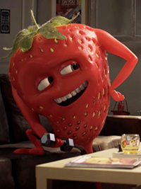
Ramon Tafraise
"Olé, Amigos ! Bien dans mon corps,bien dans mé barquettes’.Cé ma devise.Alors pour entretenir ma forme,Yé soulève tout ce qui passe devant moi: dé pastèques, dé noix, dé coco, dé fruilles…et dé dictionnaires aussi. Comme ça yé mélange coultoure et coultourisme.Humour Olé ! Mé attention : ma mouscoulatoure dé fraise et naturelle hé, sans nappage ni dopage.Ah cé soûr qué chez les frouits yé n’ai pas d’haltère-égo ! Ré-humour.Olé!" 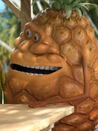
Alan Anas
"Moi je kiffe la teuf et les délires à donf ! C’est connu qu’Alan Anas va souvent en boîte. La musique qu’est trop d’ la balle ? La soul : j’la danse trop bien ! C’est mes potes qui veulent toujours que j’leur montre mes pas : "Bon, vas-y Alan là, tu nous soûles",qu’ils disent. Alors hip hop hip, je me lève et je fous l’feu sur la piste de danse !!" 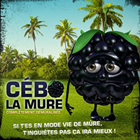
Cébo la Mûre
"C’est triste mais c’est comme ça : je suis moche. J’ai sûrement été bercé trop près de la mûre… Oh c’est pas la peine de me faire croire que non : j’entends bien ce qu’on dit sur moi. Les mûres ont des oreilles, vous savez ! C’est trop injuste ! Comment ?! Je suis la mûre des lamentations ?! C’est pas gentil-gentil ça non-plus !" 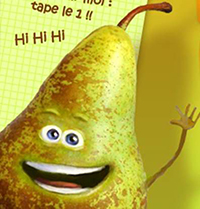
Onsfan Lapoire
"En chantier, j’ma pelleteuse… mais non j’m’appelle Onsfan Poire ! Si je suis amusant, c’est pas le fruit du hasard : mon père, Wiliam, était clown et ma mère, la belle Hélène, était une vrai comice ! Allez j’vais pas non plus tenir conférence ! Ha, ha, ha, poire/conférence, t’as saisi ? Ouais, t’es encore trop jeune mais garde ce jeu de mots en mémoire et un jour, tu comprendras toute l’étendue de mon humour…" 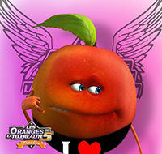
Eva Lapech
"La vie est géniale depuis que j’ai mis le grappin sur mon Abricot chéri ! Il est tout doux, mon bébé, avec sa petite peau de velours. Je l’aimerai toute ma vie. D’ailleurs, je vais vite aller le retrouver dans notre nid d’amour en haut de l’abricotier. Bah oui, depuis qu’on est mariés, on ne vit plus dans le pêcher ! Enricoooo ? J’arrive mon doudou d’amour !" 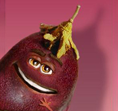
Raymond de la Passion
"Tu l’appelles comment? Prune? J’adore ce nom! Et tu viens souvent ici? Bien sûr que non, sinon je t’aurais déjà remarquée. Moi je m’appelle Raymond de la Passion,mais… appelle moi Ray… Tu veux connaître le goût de la passion? Suis moi, je connais une grangrange oû l’ont peut se rouler dans la papaye! Ah ah ah tu ris coquine, tu es si… Zut un prunneau! C’est ton père!" 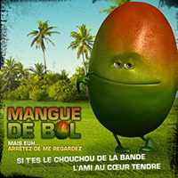
Mangue Debol
"Euh… bah… euh… Je ne sais pas trop quoi vous dire, je suis euh, quelqu’un de normal, un fruit heureux parmi tant d’autres. Mmm… euh… s’il vous plaît arrêtez de me fixer maintenant ça me gêne! Euh je vais rougir si vous continuez… Je…Hmmm.Oh voilà ça y est je sens que je mûrie!" 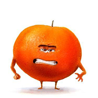
Sangrine
"Quoi, qu’est-ce t’as? Tu m’cherches? Qui t’es toi?! C’est à moi qu’tu m’exprime, tu veux que j’te réduise en compote ou quoi? J’te préviens avec moi pas d’quartier hein! J’suis pas une tendre,moi les coups d’sang, ça m’connaît! Vas-y, vas-y remonte dans ton saladier avant que j’te secoue la pulpe là!" 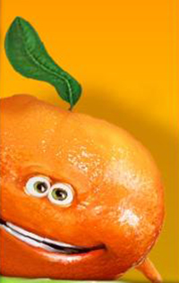
Armande Arine
"Moi ce que z’aime c’est danser… Et draguer la bande des zagrumes,surtout Clément Tine! Z’arrive sur la piste,ze le mate,les zyeux dans les zyeux, et ze l’allume façon Reine de la nuit! Ze fais des petits gestes sexy pour qu’il en ait qu’après mon écorce! Ouais, ze suis l’Armande Arine l’Impériale!" 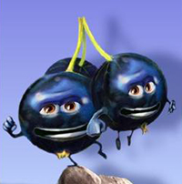
Jo le Cassis
"Nous on aime délirer... Mais pas seuls! On aime traîner avec la bande des fruits rouges! Surtout avec les 3 p’tites groseilles qu’ont a rencontrées à la teuf de frambourgeoise! Ouais, même que tu t’es pris un râteau! Eh oh c’est pas vrai! La honte! Elles t’ont même demandé de leur lâcher la grappe,Ha ,Ha,Ha! Vous êtes lours, les mecs, j’me casse. Arrrgh…oh bah non, tiens j’ peux pas!" 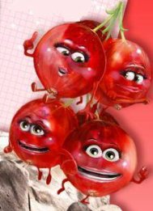
Les Girlzeilles
"Nous ,on est méga unies. Ouais comme les 6 doigts de la main… Et on adore le shopping à 6… même si c’est plus pratique debout! A ouais, trop marrante la blague!! Mais on aime surtout les garçons… Han ouais, hier on a vraiment craqué sur Ray zinvert… avec sa p’tite feuille de vigne, il est top chou! Ouais parce qu’oubliez pas qu’dans "sextuplées", y a "tuplées"!!" 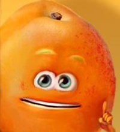
Enrico l’abricot
"Je suis ravi de vous accueillir ici! Oh… j’entends ma petite chérie qui m’appelle! Je suis là mon roudoudou des îles! C’est Eva Lapech, ma moitié. On s’est passé le noyau au doigt il n’y a pas longtemps. Elle va être contente car j’ai écrit un poème pour la féliciter des kilos perdus après son super régime "Lapech à la ligne"." 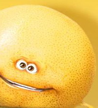
Pamplemousse namaspamouss
"J’eusse aimé m’étendre sur ma personnalité, mais pour l’heure voyez-vous, j’ai un pépin dans l’une de mes équations sur la plongée d’agrumes en milieu aquatique. C’est extrêmement agaçant… j’ai beau refaire mes calculs sur la propagation cinétique d’un jus acide dans l’élément H2O, je ne comprends pas pourquoi quand on pose un pamplemousse sur l’eau, il coule? A cause de sa grosse tête?? " 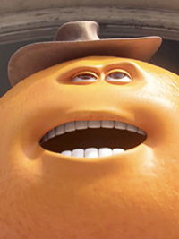
Orange presslé
"Désolé les lascars, j’ai pas trop le temps de vous parler car j’suis pressé: j’donne un cours de jus gît à ma bande, et ensuite, j’les emmène au karaoké pour qu’on prenne le mike tous ensemble. Ah oui et après, j’organise un cocktail, Et c’est moi qui mixe. 11h pétanque chez moi. Tout le monde se pointe. " 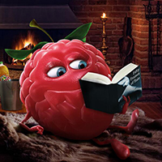
Frambourgeoise
"Que voulez-vous savoir mon cher? Vous me cueillez un peu à froid… J’habite dans la baie. Et ne vous fier pas à mon apperence, je sais aussi être sauvage. Désolée mais je dois vous laisser, mon ami, mon chauffeur et ma barquette m’attendent dehors!"Les étapes de fabrication de nos boissons
La fabrication de nos boissons commence toujours par la récolte de nos fruits lors qu'ils arrivent à maturité, ensuite ils seront le plus rapidement pressées sur place afin qu'il conserve toute leur fraîcheur.
Ensuite ils seront tamisés ou centrifugés pour obtenir un jus avec ou sans pulpe.
Durant la pasteurisation du jus, celui-ci est porté à 90°C pendant un délai très court inférieur à 2 minutes afin d'éliminer les bactéries présentes et ainsi augmenter le temps de conservation de la boisson et conserver ses propriétés nutritionnelles.
Pour finir, la boisson sera embouteillée c'est un procédé simple, transparent et 100% sécuritaire.
Tout le processus est suivi de près par des règles strictes et respect les plus hautes normes de qualité, de sécurité et de salubrité.
Il est par exemple impossible qu'un objet se retrouve dans le contenant de nos produits lors de l'embouteillage. Le jus est filtré deux fois par des filtres de 1m, pour ensuite être scellé sans contact avec l'extérieur pour toute la durée du processus. De plus la tracabilité de nos produits est effectuée sur toutes les étapes du processus, de cette façon nous ne perdons jamais nos produits de vue.
De nos usines à chez toi, tu peux être assuré que ta boisson est sous haute surveillance.